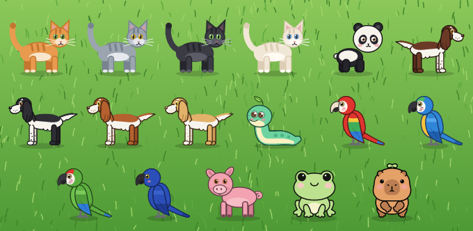

Скачать Catomania
Бесплатно для любого компьютера. Выберите свою платформу — ту, что вы используете сейчас, мы уже отметили.
Linux
AppImage, x64catomania.AppImage
Windows
Установщик, x64catomania-win-Setup.exe
macOS
Образ диска
Apple Silicon и Intel
xattr -dr com.apple.quarantine /Applications/catomania.app. В Linux
сначала сделайте AppImage исполняемым: chmod +x catomania.AppImage.
Нужен другой файл, старая версия или канал обновлений? Все релизы на GitHub.
Что умеет
Всё работает локально — без аккаунта, сети и телеметрии. Просто зверёк, который гуляет по вашему рабочему столу.
Бегает за курсором
Идёт и бежит к мыши, останавливается рядом и оглядывается — точь-в-точь настоящий кот, который решил, что вы его развлечение.
Дремлет, когда вы заняты
Оставьте курсор в покое, и зверёк уснёт — свернувшись клубком, вытянувшись или сидя, смотря кто это.
Десять животных
Кот четырёх окрасов, круглолицый котёнок Мучи, панда, спрингер-спаниель, ара, пухлая змейка, розовый поросёнок, прыгучая лягушка, капибара с ростком на голове и Нолу — лохматое лесное существо с рогами.
Векторная графика
Никаких картинок: лапы, хвост, уши, глаза и моргание — векторные фигуры, поэтому зверёк остаётся чётким при любом размере.
Возьмите на руки
Перетаскивайте левой кнопкой мыши, двойной щелчок ставит на паузу, колесо мыши делает зверька больше или меньше.
Меню и настройки
Правый щелчок: пауза, трюки, животное, скорость, окрас, размер, поверх окон, автозапуск, возврат в центр, обновления и выход. Выбор сохраняется после перезапуска.
Обновляется сам
Установленные сборки обновляются сами из канала релизов Velopack — через
меню или из терминала с ключом --update-check.
Открытый код, везде
.NET 10 и Avalonia под лицензией MIT, один небольшой исполняемый файл Native AOT для Windows, macOS и Linux.
Полезно знать
Коротко о главном: какую сборку выбрать, Wayland, обновления и настройки.
-
Linux — скачайте
catomania.AppImage, сделайте его исполняемым (chmod +x catomania.AppImage) и запустите. Ничего устанавливать не нужно, а обновление заменяет файл AppImage на месте. -
Windows —
catomania-win-Setup.exeустановит приложение, которое умеет обновляться само, а портативный zip из того же релиза подойдёт, если вы не хотите ничего устанавливать. -
macOS — скачайте
.dmgдля вашего процессора (Apple Silicon или Intel) и перетащитеcatomania.appв «Программы». Приложение пока не нотариально заверено, поэтому один раз разрешите его в Системные настройки → Конфиденциальность и безопасность → Всё равно открыть. Оно живёт в строке меню, а не в Dock.
Wayland не позволяет приложениям узнавать глобальное положение курсора, поэтому Catomania спрашивает его у композитора:
- KDE Plasma — небольшой скрипт KWin загружается через D-Bus при запуске котика и выгружается при выходе. Ничего устанавливать не нужно.
-
GNOME — при первом запуске расширение
catomania-cursor@catomaniaустанавливается в~/.local/share/gnome-shell/extensionsи включается. GNOME подхватывает новые расширения только при входе, поэтому один раз выйдите из сеанса и войдите снова. Удалить его:gnome-extensions uninstall catomania-cursor@catomania. - Другие композиторы — зверёк видит курсор, только когда тот рядом. В X11 всё работает сразу.
Передаётся только положение курсора, больше ничего.
Каждые несколько часов приложение в фоне проверяет последний релиз на GitHub и, если есть новая версия, перезапускается в неё. Проверить можно и сразу:
- Щёлкните по зверьку правой кнопкой и выберите Проверить обновления.
-
Или выполните
Catomania --update-check, при желании с--update-url <uri>для другого канала. Команда выведет результат проверки, установит обновление, если оно есть, и завершится.
Самообновление работает только в установленных сборках: AppImage в Linux или установленное приложение в Windows. Приложение для macOS и портативные сборки лишь сообщают о новой версии — скачайте её с этой страницы.
Всё из контекстного меню хранится в JSON в каталоге настроек пользователя:
~/.config/Catomania/settings.json в Linux,
%APPDATA%\Catomania\settings.json в Windows и
~/Library/Application Support/Catomania/settings.json в macOS.
| Поле | Значения | По умолчанию | Описание |
|---|---|---|---|
animal | Cat, Muchi, Panda, Dog, Snake, Parrot, Pig, Frog, Capybara, Nolu | Cat | Какое животное бегает за курсором. |
speed | Slow, Normal, Fast | Normal | Как быстро зверёк догоняет курсор. |
colorScheme | Ginger, Gray, Black, Cream | Ginger | Окрас кота. |
muchiFur | Orange, Gray, Black, Beige, Brown | Orange | Окрас котёнка Мучи. |
noluFur | Brown, Violet, Green | Brown | Окрас Нолу. |
dogCoat | Liver, Black, Red, Lemon | Liver | Окрас спрингер-спаниеля. |
parrotPlumage | Scarlet, BlueAndGold, Green, Hyacinth | Scarlet | Оперение ары. |
snakeSkin | Mint, DarkGreen, Blue, Pink, Yellow | Mint | Цвет змейки. |
size | Small, Medium, Large | Medium | Размер зверька на экране. |
alwaysOnTop | true, false | true | Держать зверька поверх других окон. |
paused | true, false | false | Оставаться на месте и не бегать за курсором. |
sleepAfterSeconds | число | 30 | Сколько секунд курсор должен стоять, чтобы зверёк уснул. |